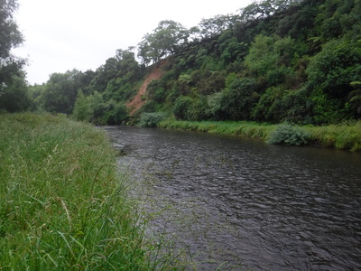
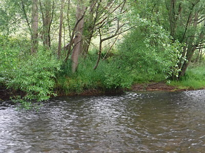
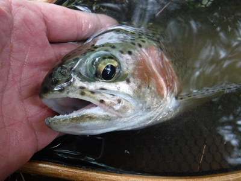
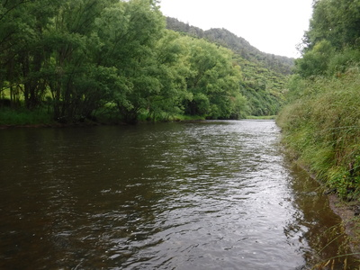
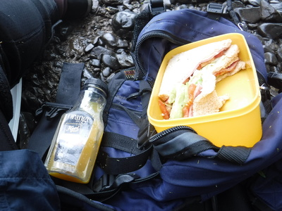

釣行日誌 ＮＺ編 「一期一会の旅：A Sentimental Journey」
ハミルトン南の山岳渓流を訪れる
12/01(SAT)-1
今朝は楽しみにしていた南方の山岳渓流に遠征するつもりで朝５時起きだ。田島さんの奥さんはすでに牧場の仕事に出かけられている。セルフサービスでトーストを焼き、コーヒーで朝食をいただく。さっそく出発だ。
例のピロンギアのサンドイッチ店で、大きめを４つ購入、そこから国道を１時間ほど走り、オトロハンガの町で地方道に入り、昔よく入らせてもらった、白犬のいた農家を目当てに走る。しかし、その農家に着いてみると、フェンスに「関係者以外立ち入り禁止」の看板が大きく出ていたので、これはお呼びでないな、と思い、どん詰まりの橋を目指す。ところが道路が舗装されて良くなり、風景がすっかり変わっていたので見違えてしまい、橋の存在に気付かずにはるかに通り過ぎて左の道を別の谷の奥まで行ってしまう。こりゃ、何か違うな....と、引き返す。
ようやく橋を見つけ、すぐ下流に１軒農家があったのでそこのドライブウェイに乗り入れて玄関をノックするが、出てきた若いご婦人に、釣りのアクセスなら隣で聞いてみてくれと言われる。少し離れた隣家へ行ってみると人の気配が無くどうやら留守らしい。しょうがないので２kmほど引き返して道沿いの農家を訪ねてみる。まだパジャマ姿の奥さんが出てみえたので、挨拶をして牧場内通過の許可をもらい、例の富士山の絵葉書を差し上げて丁重にお礼を述べてから車に戻る。他の車の邪魔にならないよう、道路脇の草地ギリギリに寄せ、身支度をして入渓。今日もウェットウェーディングだ。
農家の前を通り過ぎる時に、作業服を着てゴム長靴を履いた典型的なキウイ（ニュージーランド人の愛称）の農場主と奥さんがポーチのテーブルで朝のお茶を楽しんでいたので、手を振って挨拶して牧場の中に踏み込んで行く。時刻は朝８時半になっていた。
天気はあいにくの曇天、今にも雨が落ちてきそうである。牧草地の突き当たりまで行ったが、フェンスが高くて跨げない。角に立っている木の柱を登って越えようかと思ったが、朝露に濡れて滑りそうだったので、ここでドジを踏んで飛び降りた拍子に足を挫いてもつまらないなと、何とか下をくぐれそうなスペースを探して右往左往する。１カ所だけ小さな隙間があったので、先にロッドとベストを向こう側に置いてから、その小さな隙間を這いつくばって抜け出して、再びベストを着てから川岸へと向かう。太った体格の人では無理だったろうな。
いざ岸辺へ着いてみると、一面の長い浅瀬が茫漠と続いているばかり。この区間はこれまで来たことが無いのでポイントが読めない。

『え～っ！？ この川はこんなに難しい川だったかなぁ....』
今朝入渓する予定だった、昔白い犬のいた牧場の前には柳の藪が続くポイントがあり、いつもライズがあって「鉄板」とも言えるボウズ逃れの大好きな区間があるのだが....。
この川も水が少々色づいており、おまけにこの曇天と僕の技量では鱒を見つけるのは難しい。気温が低いのでライズ探しも可能性が低い。さりとて見込みのありそうなポイントをブラインドフィッシングで探っていては、時間がいくらあっても足りないだろう。しょうがないので第１級のポイントだけに絞り込み、足を頼りに釣り遡ることにする。
流れに入ってすぐの対岸に、ボサ下の深みが見えた。静かに流れを渉って歩み寄り、ほぼ真横の位置から、とりあえず一つ覚えのロイヤルウルフ12番を投射してみる。これが唯一目視できるフライなのだ。被さった枝に引っかけないよう、慎重に左からのサイドキャストで狙う。

光線の具合が悪く、水面に落ちたであろうフライも流下のようすも全く見えない。しかし、何か虫の知らせで告げられるモノがあり、グイッとロッドを立ててみると、レインボーがジャンプした。（笑） 嘘のようなまぐれ当たりである。６番ロッドには余裕の35cmクラスだったので、楽しませてもらいつつ余裕でランディング。幼い顔の１尾だった。

今朝１番最初のポイントで、ファーストキャストで出た１尾を優しくリリースして、遠くに見えた荒瀬を目指し、下流に行ってみる。ここも川底が滑りやすく徒渉には神経を使う。水は冷たいがネオプレンのゲーターを巻いているので少しはマシだが、転んで上半身までびしょ濡れになったら寒さに凍りつくだろう。

荒瀬のアタマから中程まで、さざ波のあたりをくまなく探ってみるが、反応は無い。ここは僕や大学時代の釣り仲間だったノボル君やリュウジ君が勝手に山岳渓流と呼んでいただけで、いわゆる日本の渓流のような流れはもっともっと上流まで行かないとお目にかかれない。ポイントの間にものすごく距離があり、釣るのに苦労させられる。しかし、経験上60cmオーバーが「どこかに」潜んで居ることは確実なので、地道に我慢の釣りをしてゆくしかない。

午後１時を回ったのでさすがに腹が減り、今朝一番のレインボー以来アタリも何も無かったがランチにする。木陰に座り込んで、ワンパターンの昼食だが、河原で食べられれば全てご馳走だ。どんな高級ホテルの料理でも敵わない。山はガスに煙っており、気温は低い。インジケーターのニンフで探るのも根気が要るので、ドライで勝負するしかないか。
釣行日誌ＮＺ編 目次へ
サイトマップ
ホームへ
お問い合わせ